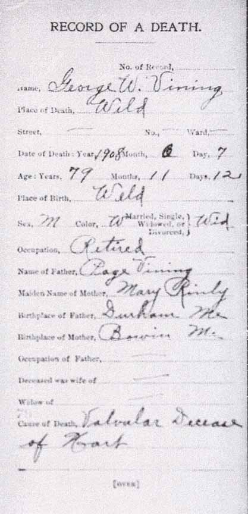
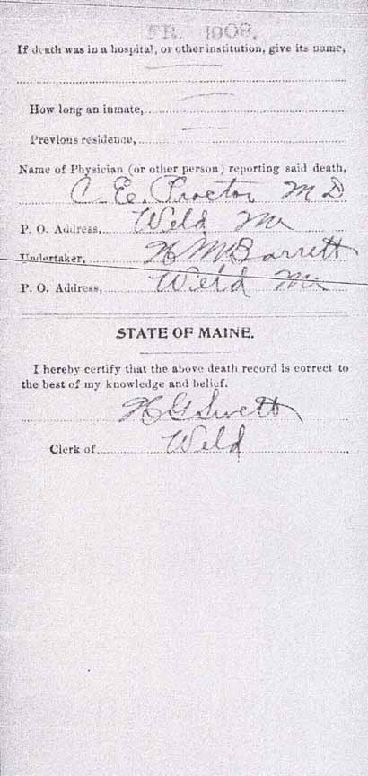

Census Data
| 1860 | 1870 | 1880 | 1890 | 1900 | 1910 | |
| George W. Vining | 32 | 42 | 51 | ? | 71 [see note below] |
dead |
| Katharine A. "Kate" (Rollins) Vining | 23 | 32 | 42 | dead | ||
| Clara E. Vining | 3 | dead | ||||
| Willie E. "Will" Vining | 6 | 17 | ? | |||
| Herbert E. Vining | 2 | 12 | ? |


Death Data
Death record for George W. Vining:
